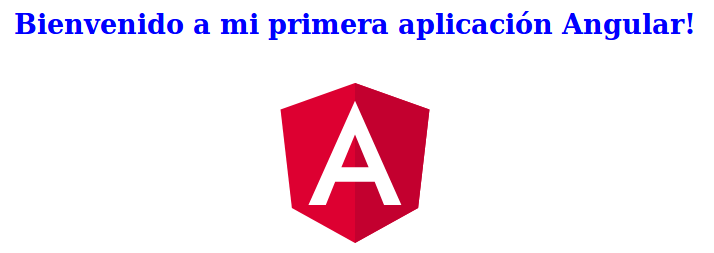
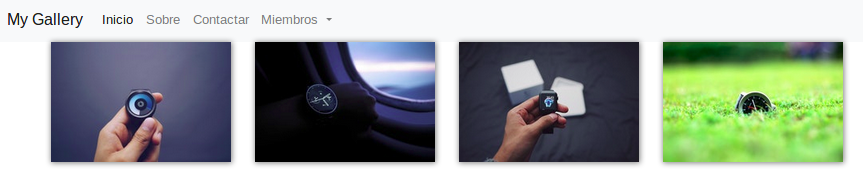

1. Introducción
-
Angular es el framework de Google para el desarrollo de SPA (Single Page Applications). Las SPAs son un tipo de aplicación web en las que la interacción se realiza reescribiendo la página actual en lugar de cargando páginas completas desde el servidor.
-
Angular ofrece una arquitectura que permite desarrollar aplicaciones de gran tamaño, mantenible y que pueda crecer en el futuro. Una aplicación pequeña se puede hacer en Javascript. Una aplicación grande no.
-
Angular está orientado a componentes. Una página está compuesta por varios componentes que se comunican entre sí. Esto nos permite reutilizar componentes en múltiples páginas.
-
Las aplicaciones Angular se desarrollan en TypeScript, aunque admiten otros lenguajes. TypeScript es un superconjunto tipado de JavaScript que se compila a JavaScript plano.
|
En la web oficial de Typestscript existe un breve tutorial a TypeScript. El handbook de TypeScript también es un buen punto de referencia ofreciendo gran cantidad de ejemplos. |
1.1. Versiones de Angular
-
Angular 1 o AngularJS (2010)
-
Angular 2 (2016). Incoroporó gran cantidad de cambios respecto a AngularJS. Los proyectos de AngularJS no son válidos en Angular 2.
-
Angular 4 (Marzo 2017). Incorpora algunas características nuevas respeto a Angular 2. En este caso sí hay compatibilidad.
-
Angular 5 (Noviembre 2017). Nue<va versión con nuevas características manteniendo compatibilidad.
2. Configuración del entorno
Instalaremos lo siguiente:
-
Git.
-
Node.js. En Linux descargar el paquete de Node.js, moverlo a una carpeta
/opt/nodejsy crearle un enlace simbólico en/usr/bin/node(ln -s /opt/nodejs/bin/node /usr/bin/node). -
npm como Gestor de paquetes para JavaScript. npm se distribuye con Node.js.
-
Consola de Angular (Angular CLI) con
npm.sudo npm install -g @angular/cliLa opción
-gindicar que Angular CLI se instale globalmente por lo que lo podemos usar desde cualquier directorio.
3. Creación de nuestra primera aplicación Angular
-
Desde el directorio de trabajo, crear un proyecto nuevo
ng new pruebaAngular (1) cd pruebaAngular ng serve -o (2)1 Crea un diretorio y crea el proyecto. La operación de crear el proyecto llevará un tiempo mientras descarga los paquetes npm. 2 Servir el proyecto ( serve) y abrir navegador con la aplicación (-o). El proyecto se sirve a través de un servidor web que incorpora Angular y que ofrece live reload, lo que permiteque la aplicación se recargue automáticamente al hacer cambios en los archivos fuente. -
La aplicación está disponible en
http://locahost:4200.
4. Organización de un proyecto Angular
Los componentes son los bloques básicos de las aplicaciones Angular. Muestran datos en la pantalla, están atentos a la entrada del usuario, y realizan una acción en función de esa acción.
Al crear el proyecto, Angular CLI ha creado el componente principal de la aplicación disponible en src/app/app.component.ts. Al definir un componente, definimos un selector, que es el luego se utilizará en la aplicación para incluir este componente. CLI define como selector para este componente app-root. Este valor se puede modificar.
// src/app/component.ts
import { Component } from '@angular/core';
@Component({ (1)
selector: 'app-root', (2)
templateUrl: './app.component.html', (3)
styleUrls: ['./app.component.css'] (4)
})
export class AppComponent { (5)
title = 'app';
}| 1 | Objeto metadata que describe las características del componente. |
| 2 | Selector del componente. Define una etiqueta HTML personalizada que la aplicación luego usará en los archivos HTML para incluir este componente (ver ejemplo siguiente). |
| 3 | Plantilla externa asociado al componente escrita en HTML. |
| 4 | Lista de hojas de estilos a aplicar al componente además de la propia de la aplicación (src/styles.css). |
| 5 | Exportación de la clase para que puedan ser usadas por otros componentes |
<!doctype html>
<html lang="en">
<head>
<meta charset="utf-8">
<title>PruebaAngular</title>
<base href="/">
<meta name="viewport" content="width=device-width, initial-scale=1">
<link rel="icon" type="image/x-icon" href="favicon.ico">
</head>
<body>
<app-root></app-root> (1)
</body>
</html>| 1 | Al incluir el selector app-root se incluirá en este archivo HTML su componente asociado app-component (ver ejemplo anterior). |
|
También es posible incluir el código de la plantilla inline en lugar de en un archivo externo. El código de la plantilla irá entre backsticks o apóstrofes.
|
4.1. Explorando el código
Podemos cambiar el texto de bienvenida modificando src/app/app.component.html. Ahí vemos que aparece un encabezado <h1> con el texto que hemos visto al abrir la aplicación
<h1>
Welcome to {{ title }}!
</h1>
Lo cambiaremos por
<h1>
Bienvenido a {{ title }}!
</h1>
Cambiaremos el valor de title en src/app/app.component.ts por mi primera aplicación Angular.
export class AppComponent {
title = 'mi primera aplicación Angular';
}
El estilo del componente lo podemos cambiar en src/app/app.component.css. Añadiremos el estilo para <h1>.
h1 {
color: blue;
font-size: 250%;
}
Tras estos cambios nuestra aplicación tiene un nuevo aspecto!!

|
Código del proyecto disponible en GitHub |
4.2. Archivos de configuración
-
package.json: Fichero de configuración de dependencias. -
tsconfig.json: Fichero de configuración de Typescript, el lenguaje de interacción con Angular. -
angular-cli.json: Este fichero sólo está disponible si el proyecto se ha creado con CLI. Establece nombres de carpetas, prefijo de la aplicación y los archivos que se incluyen al crear el proyecto. -
.editorconfig: Parámetros de configuración para el editor respecto al proyecto (charset, tamaño del espacio de tabulación, …) -
.gitignore: Contiene la lista de archivos que no están sujetos a control de versiones del repositorio Git inicializado al crear el proyecto.
|
Angular CLI también ha incluido un archivo |
4.3. Estructura de carpetas
-
e2e. Carpeta para pruebas -
node_modules. Contiene los paquetes instalados. -
src. Contiene el código del proyecto.-
app -
assets. Contiene las imágenes utilizadas en el proyecto. -
environment. Detalles acerca de los entornos de producción y desarrollo.
-
4.4. Archivos importantes
-
src/index.html. Es el archivo que se muestra en el navegador.<body>contiene<app-root></app-root>. Este el el selector que se usa en el archivosrc/app/app.component.ts, el cual mostrará el archivosrc/app/app.component.html. -
src/app/app.module.ts. Indica a Angular cómo construir la aplicación. También incluye los componentes que forman la aplicación. -
src/app/app.component.tses el componente inicial. En nuestro caso asigna el valorappa la variabletitley muestra el contenido del templateapp.component.htmlaplicándole el estiloapp.component.css. -
src/styles.css. Estilos globales de la aplicación. -
src/test.tsPunto de entra a los tests unitarios.
5. Creación de componentes
Con Angular CLI también podemos añadir nuevos componentes a la aplicación (ng generate component new-component).
ng generate component heroesAl crear un componente con Angular CLI ocurre lo siguiente:
-
Se modifica el archivo
src/app/app.module.tsincluyendo el nuevo componenteimport { HeroesComponent } from './app.component'; (1) ... @NgModule({ declarations: [ ... HeroesComponent, (2) ... ], ... bootstrap: [AppComponent], (3) ...1 Importación del nuevo componente 2 Declaración del nuevo componente 3 Especificación del componente inicial de la aplicación -
Se añade una carpeta a
src/appcon el nombre del nuevo componente (heroes). La nueva carpeta incluye los archivos TypeScript, HTML y CSS del nuevo componente:-
heroes.component.css -
heroes.component.html -
heroes.component.spec.ts -
heroes.component.ts
-
import { Component, OnInit } from '@angular/core';
@Component({
selector: 'app-heroes',
templateUrl: './heroes.component.html',
styleUrls: ['./heroes.component.css']
})
export class HeroesComponent implements OnInit {
constructor() { }
ngOnInit() {
}
}En el archivo de la clase del componente encontramos un decorador @Component que especifica los metadatos para el componente. Angular CLI genera tres propiedades de estos metadatos:
-
selector: Selector para el componente. Es el nombre que se usar para hacer referencia al componente desde una plantilla que incluya este componente.El selector tiene que ser único para que pueda ser referenciado sin equívoco desde cualquier plantilla HTML. El valor predeterminado para configurar el nombre del selector es
app-nombreComponente. En este caso el componenteheroesda lugar al selectorapp-heroes. No obstante, este valor puede ser modificado y asignarle otro nombre asegurando siempre que sea único. -
templateUrl: Archivo HTML de la plantilla del componente -
styleUrls: Array de archivos de estilos CSS propios del componente
Como consideración adicional:
-
La clase del componente se exporta para que otro componente pueda importarla.
-
La clase incluye el constructor
constructor()para que lo podamos personalizar. -
La clase incluye el método
ngOnInit()para colocar en él cualquier código de inicialización necesaria para el componente.
6. Creación de una aplicación de galería de imágenes
ng new mygallery|
En lugar de tener que descargar todos los paquetes cada vez que quieras crear un proyecto, puedes tener un proyecto como base actualizado para replicar cada vez que tengas que crear un nuevo proyecto. Luego bastaría con hacer unos ligeros cambios para adaptarlo al nuevo proyecto. Los cambios se tendrían que hacer en:
|
6.1. Un primer prototipo
6.1.1. Usar Bootstrap en el proyecto
En la web de Boostrap encontraremos las indicaciones para usar Boostrap en un proyecto. Aquí utilizaremos la opción Boostrap CDN y colocaremos el enlace en index.html
<link rel="stylesheet" href="https://maxcdn.bootstrapcdn.com/bootstrap/4.0.0/css/bootstrap.min.css">6.1.2. Crear la barra de navegación
En primer lugar creamos el componente para la barra de navegación.
ng generate component navbar --flat (1)| 1 | El flag --flat evita la creación de una carpeta navbar para los archivos del componente. En este caso, los archivos se situarán dentro de la carpeta app. |
|
Recuerda que al crear el componente con Angular CLI, además de crearse los archivos del componente, se actualiza
|
A continuación, incluimos en el archivo navbar.component.html el código para crear una barra de navegación disponible en la documentación de Boostrap para crear barras de navegación. Haremos unos pequeños cambios para personalizarla y que quede de esta forma. El código está disponible en el repositorio GitHub del proyecto.
Por último, incluiremos el componente de la barra creada en su componente padre. Para ello, modificamos el archivo app-component.html para incluir el selector de la barra de navegación reemplazando su contenido por
<app-navbar></app-navbar>6.1.3. El componente de la galería
Crearemos un componente para la galería con Angular CLI.
ng generate component galleryComo ya sabemos, se creará una carpeta con los archivos del componente y se actualizará app.module.ts
Por ahora, la galería mostrará una serie estática de imágenes. Añadiremos el código siguiente a gallery.component.html
<div class="container">
<div class="row">
<a href = "#">
<div class = "col-md-3 col-sm-4 col-xs-6"><img class="img-responsive" src="https://images.pexels.com/photos/9051/pexels-photo.jpg?h=150" /></div>
</a>
<a href = "#">
<div class = "col-md-3 col-sm-4 col-xs-6"><img class="img-responsive" src="https://images.pexels.com/photos/23475/pexels-photo.jpg?h=150" /></div>
</a>
<a href = "#">
<div class = "col-md-3 col-sm-4 col-xs-6"><img class="img-responsive" src="https://images.pexels.com/photos/9050/pexels-photo.jpg?h=150" /></div>
</a>
<a href = "#">
<div class = "col-md-3 col-sm-4 col-xs-6"><img class="img-responsive" src="https://images.pexels.com/photos/754998/pexels-photo-754998.jpeg?h=150" /></div>
</a>
</div>
</div>Y definiremos estos estilos en gallery.component.css para el componente definido
img {
box-shadow: 0px 1px 6px 1px gray;
margin-bottom: 30px;
}
img:hover {
-webkit-filter: grayscale(1);
}Por último, añadimos el tag del componente gallery <app-gallery> a su componente padre app.component.html para mostrar la galería
<app-navbar></app-navbar>
<app-gallery></app-gallery>El resultado debería ser algo similar a este:

6.2. Mejora de la aplicación. Separación de datos y presentación
Hasta ahora, la galería de imágenes está almacenando de forma conjunta los datos de las imágenes y su presentación. En este apartado estructuraremos la galería con esta relación jerárquica de componentes.
gallery |_image-list |_image
A continuación crearemos un subcomponente de gallery al que denominaremos image-list. Lo denominamos subcomponente porque lo creareamos dentro de gallery y no dentro de app.
También crearemos un subcomponente de image-list al que denominaremos image. En este caso usaremos el parámetro --flat para indicar a Angular CLI que no cree una carpeta aparte para el componente, sino que cree los archivos en la misma ruta desde la que se está creando.
cd src/app/gallery
ng generate component image-list
cd image-list
ng generate component image --flatLa estrucuctura de archivos de gallery deberá ser así:
gallery/
├── gallery.component.css
├── gallery.component.html
├── gallery.component.spec.ts
├── gallery.component.ts
└── image-list
├── image.component.css
├── image.component.html
├── image.component.spec.ts
├── image.component.ts
├── image-list.component.css
├── image-list.component.html
├── image-list.component.spec.ts
└── image-list.component.ts
|
El haber creado los archivos del componente |
|
El código está disponible en el repositorio GitHub del proyecto. |
6.2.1. Creación del modelo
Pese a no ser obligatorio, es conveniente que los modelos de una aplicación estén agrupados dentro de un mismo directorio. En nuestro caso, crearemos un directorio models dentro del directorio app. Desde models crearemos una clase image con Angular CLI. Esto creará un archivo TypeScript (image.ts) para la clase dentro de models.
ng generate class imageDentro de la clase definiremos su constructor
constructor(public imageURL: string, public author: string, public website: string) {}|
El componente |
6.2.2. Refactorización de gallery.component.html
El código de gallery.component.html será sustituido por el selector del componente image-list. Su código ahora se distribuirá entre las plantillas y las clases de los componentes image-list e `image.
gallery.component.html refactorizado<app-image-list></app-image-list>6.2.3. Separación de los datos de la presentación mediante image-list.component.ts
Este componente está dedicado a inicializar los valores de la lista de imágenes a mostrar (URLs de las imágenes, autores, …)
import { Component, OnInit } from '@angular/core';
import { Image } from '../../models/image'; (1)
@Component({
selector: 'app-image-list',
templateUrl: './image-list.component.html',
styleUrls: ['./image-list.component.css']
})
export class ImageListComponent implements OnInit {
images: Image[] = [ (2)
{'imageURL':'https://images.pexels.com/photos/9051/pexels-photo.jpg?h=150', 'author':'Oliur Rahman', 'website':'http://photos.oliur.com'},
{'imageURL':'https://images.pexels.com/photos/23475/pexels-photo.jpg?h=150', 'author':'Donald Tong', 'website':''},
{'imageURL':'https://images.pexels.com/photos/9050/pexels-photo.jpg?h=150', 'author':'Pixabay', 'website':'http://pixabay.com'},
{'imageURL':'https://images.pexels.com/photos/754998/pexels-photo-754998.jpeg?h=150', 'author':'Tarun Netha Amballa', 'website':''}
];
constructor() { }
ngOnInit() {
}
}| 1 | Importación de a clase imagen para poder crear un array de objetos image |
| 2 | Creación del array de objetos image. Los objetos image se pueden crear en JSON o con new Image(param1, param2, …) |
6.2.4. Presentación de la lista de imágenes
Para presentar la lista de imágenes nos valdremos de la directiva * ngFor
La plantilla de la lista de imaǵenes iterará sobre el array images del componente. Además, interactuará con el componente image para pasarle en cada iteración la imagen a presentar. Para indicar que se quiere pasar un objeto al componente app-image, el objeto se encerrará entre corchetes (p.e [image]).
Consulta la documentación oficial de Angular para saber más de la interacción de componentes.
image-list.component.html<div class="container">
<div class="row">
<app-image *ngFor="let image of images" [image]="image"></app-image> (1)
</div>
</div>| 1 | [image] indica una interacción con el componente <app-image>. En <app-image> se recibirá el objeto en [image]. [image] toma en cada iteración una imagen (image) del bucle * ngFor |
6.2.5. El componente para la imagen
El componente para la imagen recibe de image-list.component.html una propiedad de entrada ([image]) con un decorador @Input. Por tanto, el componente tendrá que importar Input de @angular/core.
image.component.tsimport { Component, OnInit, Input } from '@angular/core'; (1)
import { Image } from '../../models/image'; (2)
@Component({
selector: 'app-image',
templateUrl: './image.component.html',
styleUrls: ['./image.component.css']
})
export class ImageComponent implements OnInit {
@Input() image: Image; (3)
constructor() { }
ngOnInit() {
}
}| 1 | Importación de Input |
| 2 | Importación de la clase de la imagen para poder usarla |
| 3 | Propiedad de entrada image enviada desde image-list.component.html |
6.2.6. Presentación de la imagen
Ya sólo queda usar las interpolación para presentar los datos de ima imagen. Esto lo haremos accediendo a la propiedad imageURL de image.
image.component.html<a href = "#">
<div class = "col-md-3 col-sm-4 col-xs-6"><img class="img-responsive" src="{{image.imageURL}}" /></div>
</a>|
Como los estilos para las imágenes estaban en |
6.3. Mejora de la aplicación. Creación de un servicio
El problema que tiene actualmente la aplicación de galería de imágenes es que el componente de galería de imágenes sabe demasiado acerca de la cómo construir la lista de imágenes. Es más, tiene encargado la construcción de la lista de imágenes a partir de sus datos.
La solución está en delegar el trabajo de crear la lista de imágenes a otro componente y crear lo que se conoce como un servicio. Un servicio nos va a permitir ocultar los detalles acerca de cómo recuperar datos y compartir datos entre componentes de nuestra aplicación.
Desde el directorio base del proyecto crearemos un servicio denominado image con Angular CLI. Esto creará los archivos TypeScript (image.service.ts e image.service.spec.ts) para el servicio dentro de services
ng generate service image --module=app (1)| 1 | Creación del servicio image y actualización de app.module.ts con los datos del servicio image. |
|
Para que este servicio pueda ser más adelante siguiendo el patrón de Inyección de dependencias el servicio tiene que ser importado en |
app.module.ts tras definir el servicio image....
import { ImageService } from './image.service';
....
@NgModule({
....
providers: [ImageService],
....
})
....image.service.tsimport { Injectable } from '@angular/core';
import { Image } from './models/image'; <1> Importar modelo imagen
@Injectable() (2)
export class ImageService {
images: Image[] = [ (3)
{'imageURL':'https://images.pexels.com/photos/9051/pexels-photo.jpg?h=150', 'author':'Oliur Rahman', 'website':'http://photos.oliur.com'},
{'imageURL':'https://images.pexels.com/photos/23475/pexels-photo.jpg?h=150', 'author':'Donald Tong', 'website':''},
{'imageURL':'https://images.pexels.com/photos/9050/pexels-photo.jpg?h=150', 'author':'Pixabay', 'website':'http://pixabay.com'},
{'imageURL':'https://images.pexels.com/photos/754998/pexels-photo-754998.jpeg?h=150', 'author':'Tarun Netha Amballa', 'website':''}
];
constructor() { }
getImages() { (4)
return this.images;
}
}| 1 | Importar modelo image |
| 2 | El decorador @Injectable indica que este servicio puede tener dependencias inyectadas. |
| 3 | Inicializar array de imágenes |
| 4 | Creación de un método que devuelva el array de imágenes |
image-list.component.tsimport { Component, OnInit } from '@angular/core';
import { Image } from '../../models/image';
import { ImageService } from '../../image.service'; (1)
@Component({
selector: 'app-image-list',
templateUrl: './image-list.component.html',
styleUrls: ['./image-list.component.css']
})
export class ImageListComponent implements OnInit {
images: Image[] = []; (2)
constructor(private imageService: ImageService) { } (3)
ngOnInit() {
this.images = this.imageService.getImages(); (4)
}
}| 1 | Importación del componente del servicio |
| 2 | Declaración del array de imágenes |
| 3 | Modiifcación del constructor para incluir el servicio de imágenes |
| 4 | Inicialización del array de imágenes con lo que devuelva el servicio |
De esta forma hemos conseguido aislar el componente de lista de imágenes de los detalles de cómo obtener la lista de imágenes. Ahora, el componente sólo se limita a usar el servicio de imágenes para obtener la lista de imágenes.
6.3.1. Mostrando los detalles de una imagen
En este apartado veremos cómo implementar la funcionalidad de mostrar los detalles de una imagen al hacer clic sobre ella.
-
Añadir el evento de clic a
image-list.component.html. Al hacer clic sobre una imagen llamaremos a un métodoonSelect()pasándole como argumento la imagen seleccionada<app-image *ngFor="let image of images" [image]="image" (click)="onSelect(image)"></app-image> -
Añadir a
image-list.component.tsuna variable de instancia de tipoImagedenominadaselectedImage. Esta variable representa la imagen seleccionada de la lista.... export class ImageListComponent implements OnInit { images: Image[] = []; selectedImage: Image; .... } -
Añadir a
image-list.component.tsel métodoonSelect()que inicialiceselectedImagecon la imagen seleccionada.onSelect(image: Image) { this.selectedImage = image; } -
Añadir en la parte superior de
image-list.component.htmlel selector de la imagen de detalle (app-image-detail) para mostrar el detalle de las imágenes en la parte superior de la lista de imágenes. Este elemento pasará al componenteImageDetailla imagen seleccionada mediante[selectedImage]que será recibida mediante@Input().<app-image-detail [selectedImage]="selectedImage"></app-image-detail> -
Añadir a
image-detail.component.tsla recepción deselectedImage.import { Component, OnInit, Input } from '@angular/core'; (1) import { Image } from '../../models/image'; (2) @Component({ selector: 'app-image-detail', templateUrl: './image-detail.component.html', styleUrls: ['./image-detail.component.css'] }) export class ImageDetailComponent implements OnInit { @Input() selectedImage: Image; (3) constructor() { } ngOnInit() { } }1 Importar Input2 Importar el modelo de la imagen para poder usarlo 3 Variable de instancia creada a partir del valor recibido -
Mostrar los detalles en
image-detail.component.html<div class="container image-detail"> (1) <div class = "row"> <div class = "col-sm-6 col-xs-12"> <img class="img-responsive" src="{{selectedImage.imageURL}}" /> (2) </div> <div class = "col-sm-6 col-xs-12"> <h1>{{selectedImage.author}}</h1> (3) <h2><a href = "{{selectedImage.website}}">{{selectedImage.website}}</a></h2> </div> </div> </div>1 El estilo image-detaillo definiremos en la hoja de estilos del componente de detalle.2 Mostrar la imagen seleccionada 3 Mostrar otras propiedades de la imagen seleccionada
image-detail.css.image-detail {
margin: 20px auto;
}6.4. Routing
Con routing podemos dividir una aplicación en áreas que podemos llamar páginas, e indicar a Angular qué paginas mostrar en función de la ruta especificada.
Las aplicaciones Angular son SPA (Single Page Applications). En realidad sólo existe una página aunque tengamos la sensación de estar navegando por páginas diferentes. Routing es la técnica que lo permite.
Como ejemplo, generemos dos componentes para asociarlos a los elementos de menú Sobre y Contactar. Estos serán los componentes about y contact que generaremos con Angular CLI tal y como se muestra a continuación. A cada uno le asignaremos una ruta.
ng generate component about
ng generate component contactLas rutas se definen en app.module.ts.
app.module.ts...
import { Routes, RouterModule } from '@angular/router'; (1)
import { ModuleWithProviders } from '@angular/core';
...
const appRoutes: Routes = [
{path: '', redirectTo: '/gallery', pathMatch: 'full'}, (2)
{path: 'gallery', component: GalleryComponent}, (3)
{path: 'about', component: AboutComponent},
{path: 'contact', component: ContactComponent}
];
@NgModule({
...
imports: [
RouterModule.forRoot(appRoutes), (4)
BrowserModule
],
...
})
...| 1 | Importación de módulos necesarios para el routing |
| 2 | Redirigir el path vacío a la galería |
| 3 | Establecer los componentes a cargar en cada ruta |
| 4 | Modificación de los imports del módulo |
A continuación, debemos indicar dónde colocar el contenido de cada ruta. Para ello, Angular cuenta con el tag <router-outlet>. En nuestro caso, cambiaremos el tag en app.component.html para que muestre en la página principal el contenido de la ruta seleccionada.
app.component.html<app-navbar></app-navbar>
<router-outlet></router-outlet>En el componente de la barra de navegación navbar.component.html debemos hacer varios cambios.
-
Los atributos
hrefserán sustituidos por[routerLink]para convertirlos en links Angular y que usen las rutas definidas. -
Aplicar el estilo de elemento activo del menú a la opción seleccionada:
<li routerLinkActive="active"> (1)
<a class="nav-link" [routerLink]="['/']">Inicio <span class="sr-only">(current)</span></a> (2)
</li>
<li routerLinkActive="active">
<a class="nav-link" [routerLink]="['/about']">Sobre</a> (3)
</li>
<li routerLinkActive="active">
<a class="nav-link" [routerLink]="['/contact']">Contactar</a> (4)
</li>| 1 | Utilizaremos routerLinkActive en cada link para aplicarle un estilo diferente al link activo |
| 2 | Uso de [routerLink] para establecer la ruta de inicio |
| 3 | Uso de [routerLink] para establecer la ruta de /about |
| 4 | Uso de [routerLink] para establecer la ruta de /contact |
Por último, debemos hacer un último cambio en el componente image.component.html, ya que si hacemos clic sobre una imagen veremos que se recarga su página de detalle, pero desaparece al instante. Para ello, haremos dos cambios:
-
Eliminar el atributo
hrefen el link de la imagen enimage.component.html.<a> (1) <div class = "col-md-3 col-sm-4 col-xs-6"><img class="img-responsive" src="{{image.imageURL}}" /></div> </a>1 Quitar el atributo hrefpara que no se produzca una regarga de página al mostrar detalles -
Añadir a los estilos de
image.component.csseste estiloa:hover { cursor: pointer; }